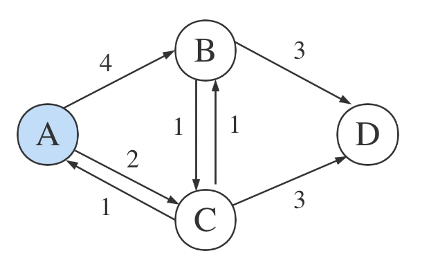
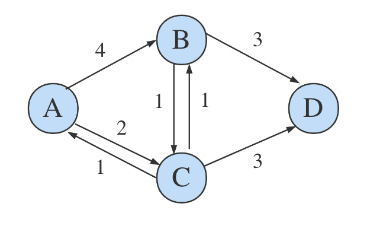

在 Dijkstra 算法中保存路径
区块链的 Layer 2 中有一种 State Channels 的扩容方案，其中会需要搜索距离最近的路由节点。
Dijkstra 算法思路
Dijkstra 算法能够解决 single-source 的最短路径问题，算法本身只输出一个点到其他点的最短距离。比如在这样一个图中，起点是 A，想知道到 D 点的最短距离是多少：
Dijkstra 算法实质是动态规划的贪心算法的结合，要寻找最短路径，就去遍历所有的点，每到一个点更新最短距离的记录，直到走过所有的点，就可以确信拿到了可靠的最短距离的记录。初始化的状态集合为：
| A | B | C | D |
|---|---|---|---|
| 0 | - | - | - |
此时位于 A 点，未出发的状态，到自身的距离为 0，到其余点的距离未知。
从 A 点出发后，发现 A 点可以到达 B 点和 C 点，距离分别为 4 和 2，那么就更新状态集合为：
| A | B | C | D |
|---|---|---|---|
| 0 | - | - | - |
| 4 | [2] | - |
中括号的含义是在当前这一轮中距离最短的点，哪个距离最短，下一步就到哪个点。到 C 点的距离比到 B 点的距离短，所以下一轮到 C 点：
到 C 点以后，发现 C 点可以到达 A、B、D 三个点，这个时候意识到，其实 A 点已经走过了，不会再往回走的。于是需要另一个集合记录走到过哪些点，以避免下一步重复。定义 prev = []，因为 A 和 C 已经走过了，就把这两个点放到集合里， prev = [A, C]。
在这一步的时候，到达 B 点的距离从 4 变成了 3，A -> C -> B 的距离小于 A -> B 的距离，更新状态集合，同时因为已经能够到 D 点了，更新到 D 点的距离：
| A | B | C | D |
|---|---|---|---|
| 0 | - | - | - |
| 4 | [2] | - | |
| [3] | 5 |
这一轮中，到达 B 点的距离小于到达 D 点的距离，中括号选中 3，并且下一步到 B 点：

此时 prev = [A, C, B]，状态集合更新为：
| A | B | C | D |
|---|---|---|---|
| 0 | - | - | - |
| 4 | [2] | - | |
| [3] | 5 | ||
| [5] |
中括号只剩一个选择，只有 D 点没去过了：
prev = [A, C, B, D]，所有点遍历结束，最终结果为：
| A | B | C | D |
|---|---|---|---|
| 0 | 3 | 2 | 5 |
现在就可以知道从 A 点到 D 点的最短距离为 5.
最短路径跟踪
算法结束后，可以得到从 A 点到其他点的最短距离数据。可是如果不只想要距离值，还想要具体路径，比如从 A 点到 D 点的最短路径，该怎么处理？
正向贪心算法
可以判断出，从 A 到 D 的最短路径是 A -> C -> D，而上面的 prev 集合为 A, C, B, D。因为从 C 直接到 D 比 C -> B -> D 的距离要短，所以在路径中抛弃了 B 点。
按照这样的现象进行对比，是不是只要在 prev 的基础上，在合适时候抛弃某些点，就可以得到正确路径了？比如上面从 B 到 D，存在 4 种情况：
- B 可以到达 D
- B 不可以到达 D
- 通过 B 到达 D 是状态集合中到达 D 距离最短的方案
- 通过 B 到达 D 不是状态集合中到达 D 距离最短的方案
这 4 中情况中，只有 B 可以到达 D 并且 通过 B 到达 D 是状态集合中到达 D 距离最短的方案 的时候，才会保留 B 这个点到路径中。否则就应该去掉 B 点。
中括号每选择到一个点，就把点放到路径中，如果不满足上面的条件，就从路径中去掉这个点，也就是不放到路径里面。这样的话，即使有其他捣乱的点存在，程序也可以应对，比如：
在选中 B 点后，发现 B 点不满足条件，此时路径由 path = [A, C, B] 回退到了 path = [A, C]。如果下一轮最小的点选中了 E，path = [A, C, E]，但是 E 点不满足条件，path = [A, C]。直到最小的点选中目标点 D，整个程序结束。
或者这样的，也可以处理，E 点不会被放到路径中：

那么这样的思路存在问题吗？当然有问题，这样的程序是不能处理这种情况的：

假如最短路径是 [A, E, C, D]，E 点是不满足上面被放进路径的条件的，E 点无法直接到达 D 点，但是又必须被包含在路径里。去掉 可以直接到达 D 点 的限制？那上上图的 E 点也会被放到路径里。
也就是说，需不需要能够直接到达目标点，取决于对于最终的路径，被选中的点是不是倒数第二个点。这样的条件在一个未知的图中是无法判断的，谁能知道一个点是最终路径的倒数第几个点？
正向的贪心算法试图每一次都把距离最小并且在最终路径上的点记录下来，但其实很难做到，因为根本无法判断一个点是不是在最终的路径上。
反向贪心算法
当 D 点被中括号选中，作为本轮距离最小的点，就已经能够确定从 A 点到 D 点最短距离了。那么只要知道这一步是从哪个点过来的，来源的点就一定是最短路径的倒数第二个点。依次类推，只要层层回推到出发的点，整条路径就出来了。
假如在到达 D 点后，能够知道是从 C 点而不是 B 点过来，在 C 点的时候，能够知道是从 A 点而不是 B 点过来，整个路径就很清晰了。
问题是怎么在 D 点的时候，知道是从 C 点而不是 B 点过来的？选中最小距离点的顺序可是 [A, C, B, D]，按照最小点的顺序显然是不行的。
这看起来不是一件难事，在 DFS 或者树的遍历中，经常会前后进入多个路径然后在适当的时候返回以修正路径。换个角度看，其实在 DFS 中维护最短距离，也可以达到目的。维护了距离状态的 DFS == Dijkstra algorithm 吗？显然不是。
递归 vs 尾递归
Dijkstra 适合写成循环的形式：
for {
}
更适合写成尾递归的形式：
func recursion() {
recursion()
}
总之，程序会是单向的循环。适合写成递归的形式吗？
func recursion() {
for {
recursion()
}
}
当遇到分支情况的时候，用 for 循环 “同时” 进入多个路径，寻找最合适的那个。比如到 C 点的时候，for 循环前后进入 C -> B -> D 和 C -> D 的路径，每次循环将只保留一条路径，找到最合适的直接终止递归就可以。
这样的写法存在问题吗？问题在于，怎么确定在哪个节点进行分叉。在 C 点分叉？为什么是 C 点？为什么不是 B 点？如果是 B 点，路径上就会多出 B 点。为什么不是 A 点？如果是 A 点，到了 C 点的时候需不需要继续分叉？是每一个点都需要分叉吗？想象一下那会造成多么大的冗余……为什么树可以同时遍历？因为树的节点不会交叉。
第二个动态规划
第一个动态规划是指算法本身距离数据的维护。第二个动态规划可以维护一个路径数据的状态：
pathList = {
A: [],
B: [],
C: [],
D: []
}
路径状态保存从源点到达每个节点在当前阶段的最短路径，在一开始的时候，因为 A 点已经可以到达 B 和 C：
pathList = {
A: [A],
B: [A, B],
C: [A, C],
D: []
}
选择并到达 C 点，这个时候因为 C 点可以到达 B 点并且 A -> C -> B 的距离小于 A -> B，所以更新路径状态数据为 pathList[C].push(B)。D 点也可以到达了，更新路径状态。（更新路径状态数据发生在进入下一个点之前，甚至发生在选择下一个节点之前。可以想一想为什么这样做。）
pathList = {
A: [A],
B: [A, C, B],
C: [A, C],
D: [A, C, D]
}
这一轮在距离的状态数据上，会把 B 点选中为最小距离的节点，判断到达 D 的路径 A -> C -> B -> D 大于目前已有的距离记录 A -> C -> D，所以不更新路径状态。（判断距离是否大于已有距离是根据距离的状态数据，也就是表格的数据。）
最终进入目标 D 结束，路径状态不更新。
得到路径 A -> C -> D。
路径的状态数据可以为了节省空间，只维护到达目标点的路径吗？不可以，因为更新下一个点的路径需要依赖当前点的路径，路径的状态必须是全量的。
非最短路径跟踪
Dijkstra 算法包含了贪心算法的思维，每一步选出的都是距离最短的点。如果需要保存不是最短路径的路径，Dijkstra 算法也许可以做到，但是就已经不需要 Dijkstra 算法了。DFS/BFS 更合适一点。
补充（2025.05.11）
这个 Dijkstra 相关的工作，是当时在一个 State Channels 的项目 pylons 上，用来在多个通道之间寻找最短路径用的，原本是 DFS，后来我加了一个 Dijkstra，带有黑名单的功能，以及把手续费作为路径距离的计算依据。
现在把 route 部分的代码单独拆分出一个仓库 smallyunet/dijkstra-demo 留作纪念。